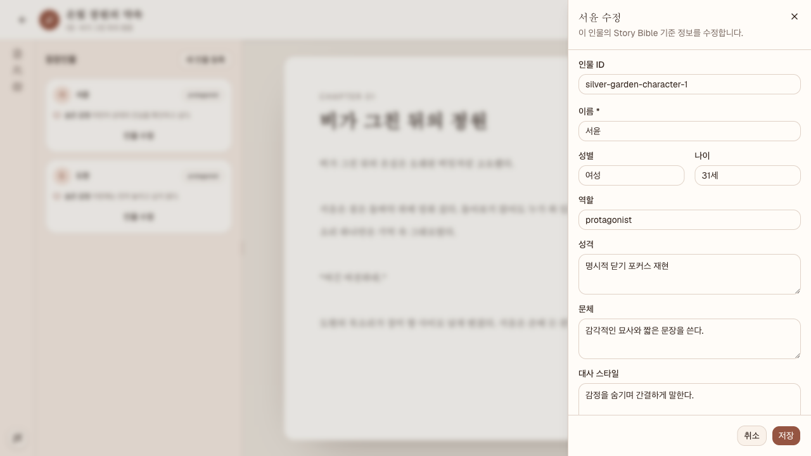

CharacterDiscardDialog에 한정해 인물 신규·수정 Sheet의 dirty 닫기, Escape, 브라우저 Back, 계속 편집, 변경사항 버리기, keyboard focus trap, launch/navigation focus, 저장 중 차단을 확인했다. 정상 경로를 먼저 확인하고 각 결함 후보는 clean MSW 시작에서 반복했다.
제외 범위
제품 코드·테스트·설정·기존 문서 수정, 새 서버 실행, 외부 네트워크, 실제 backend 데이터 변경, 인물 저장 의미와 다른 집필 화면 컴포넌트 감사는 제외했다.
인증 없음, 공유 Vite 서버와 clean MSW silver-garden seed, 서윤·도현 인물 카드. 저장 중 상태는 페이지의 character POST 전달만 지연하고 최종 요청은 MSW가 처리하게 했다.
뷰포트
할당: 375×800, 1280×800. 실제 브라우저 도구 viewport: 1280×720. 도구가 viewport 변경을 제공하지 않아 할당 크기의 responsive 분기는 미확인이다.
실행 기준
db203c227ff68d319687c8761dd5a789f2d376cc
결과 요약
확정1
등록1
중복0
제외1
등록한 버그
심각도 Medium
계속 편집을 선택하면 인물 Sheet 포커스가 문서 본문으로 이탈한다
티켓
#14 · ready
재현 절차
clean MSW 등장인물 목록에서 서윤 인물 수정 또는 새 인물 등록을 연다.
성격 또는 이름을 변경해 Sheet를 dirty 상태로 만든다.
Escape, 인물 편집기 닫기 또는 브라우저 Back으로 폐기 확인을 연다.
초기 포커스가 있는 계속 편집을 선택하고 draft, URL, document.activeElement를 확인한다.
기대 결과
dialog만 닫히고 exact draft와 editor URL을 유지한 채, 방금 작업하던 control 또는 안정적인 fallback을 포함한 인물 Sheet 내부로 포커스가 돌아가야 한다.
실제 결과
draft와 URL은 유지되지만 document.activeElement는 두 clean 재현과 추가 명시적 닫기 재현에서 모두 BODY였고 inDialog=false였다.
사용자 영향
작업을 계속하기로 명시한 사용자가 편집 위치를 잃는다. 특히 키보드 사용자는 Sheet의 control을 다시 찾아 탐색해야 하므로 REQ-08과 명시된 focus 복원 기준을 충족하지 못한다. 데이터 손실은 확인되지 않았다.
관련 위치
frontend/src/features/character-card-editor/character-card-editor-sheet.tsx:269, frontend/src/features/character-card-editor/use-character-card-editor.ts:192. controlled dialog에 명시적 close autofocus 대상이 보이지 않는 점은 원인 가설이며 아직 검증되지 않았다.
두 번째 clean 재현: 이름 초안과 신규 등록 Sheet는 유지되지만 같은 시점의 측정에서 포커스가 BODY로 이탈했다.

추가 확인: 명시적 닫기 경로에서도 성격 초안과 editor URL은 유지됐으나 Sheet 내부 포커스가 복원되지 않았다.
두 번의 clean 재현
수정 run: 서윤 성격을 단호하고 세심하다. discard-normal로 변경하고 Escape 뒤 계속 편집. 성격 값과 수정 URL 유지, active element는 BODY.
신규 run: 이름을 포커스 재현으로 입력하고 Escape 뒤 계속 편집. 이름 값과 신규 URL 유지, active element는 BODY, Sheet dialog 내부가 아님.
중복된 관찰
등록 전과 등록 직전에 zellij-agent ticket-worker list --json을 조회했다. 기존 #12 원고 저장 재시도 성공 뒤 편집기 포커스 복원은 원고 자동 저장 retry 성공 뒤 사라지는 버튼의 포커스 문제로, 인물 discard 취소·발생 조건·수정 경계가 달라 중복이 아니다. 동일 결함 티켓은 없었다.
제외한 관찰
/favicon.ico의 404 console error 1건은 이 컴포넌트·사용자 흐름과 무관하고 기능 영향이 없어 등록하지 않았다.
수행한 검사
curl 대상 route: HTTP 200.
정상 수정 discard: dialog 초기 focus는 계속 편집, Shift+Tab/Tab focus trap 정상.
discard 확정: Sheet와 dialog가 한 번만 닫히고 목록 URL 및 서윤 인물 수정 launch focus 복원 정상.
dirty browser Back: 확인 전 editor state 유지, 계속 편집 뒤 editor URL 복원, 확정 뒤 목록으로 한 번 이동 정상.
저장 중 차단: 10초 지연한 MSW POST에서 fieldset, 닫기, 취소, 저장 중…이 disabled이고 진행 status가 노출됨을 확인.
network: 초기 GET /api/projects/silver-garden/workspace와 GET /api/projects/silver-garden/story-bible가 200.
티켓 #14: 등록 뒤 fresh JSON에서 ready, 제목·요약·spec·plan·branch·prompt 일치.
git status --short --branch: 시작 시 기존 삭제 1개와 다른 에이전트의 미추적 보고서·문서를 확인하고 그대로 보존.
제약 및 미확인 항목
브라우저 MCP allowlist에 viewport resize가 없어 375×800 모바일 중첩 Sheet와 정확한 1280×800을 확인하지 못했다. clean seed가 항상 서윤·도현을 제공하고 할당 범위에서 MSW source를 바꾸지 않았으므로 빈 인물 목록의 discard 연계는 해당 없음으로 두었다. 저장 실패·retry용 route override 도구가 없어 실패 뒤 discard 취소는 미확인이다. 제품 소스의 원인 설명은 확인된 DOM 결과 뒤 살펴본 제한적 가설이며 구현 시 검증이 필요하다.